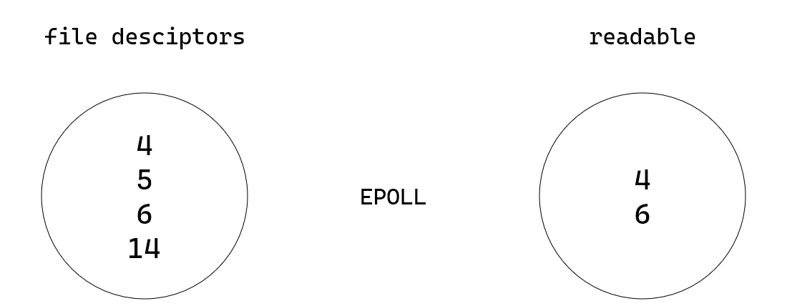
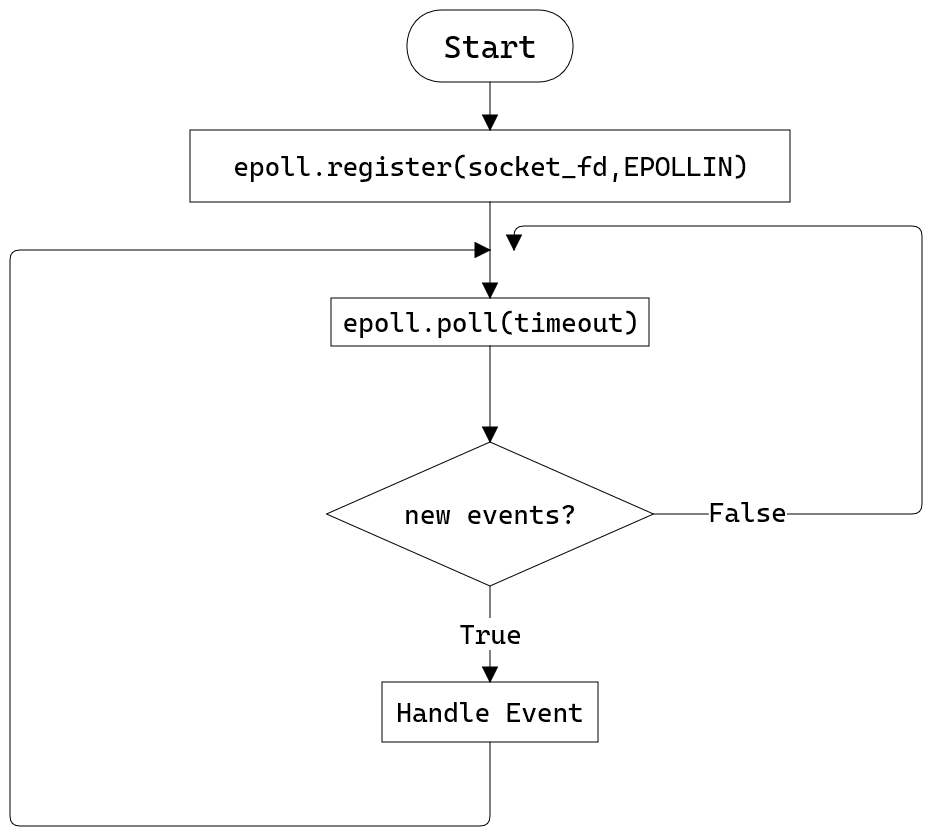

- Mon 28 December 2020
- Programing
- h4cker
- #eventloop, #epoll, #socket, #javascript, #libuv
Một ngày cuối năm đẹp trời, tôi bị đứa bạn thân ai nấy lo lâu năm hỏi một câu, mày biết tại sao cái thằng Nodejs, Redis là Single-Thread nhưng mà sao nó vẫn chạy nhanh như thế không. Thú thật là mình không biết, vào đọc mấy cái medium thì cũng k hiểu gì. Thôi thì tự code một cái event-loop , cũng là để hiểu event-loop nó hoạt động như thế nào.
Một số khái niệm
Nào cùng nhau tra cứu một số khái niệm, để hiểu được bài viết này, cảnh báo là nhiều chữ và nhiều code nên các bạn cứ thảnh thơi ra làm ấm trà, điếu thuốc rồi vào đọc cho nó thư thả.
File Descriptors / File Descriptor Table
Trong linux có một câu nói khá nổi tiếng Everything is a file, File ở đây có thể là.
- File (Đương nhiên rồi)
- Terminal I/O (stdin/stdout/stderr)
- pipe
- sockets
- device
Khi một tiến trình được khởi chạy thì mặc định sẽ được truy cập đến 3 tài nguyên
- stdin
- stdout
- stderr
Các tài nguyên này được lưu trong bảng gọi là File Descriptor Table (FDTable) với chỉ số (index) là File Descriptor(FD)
| FD | Pointer |
|---|---|
| 1 | stdin pointer |
| 2 | stdout pointer |
| 3 | stderr pointer |
Nếu tiến trình này mở một file mới, thì file mới sẽ được add vào FDTable, Tương tự khi tiến trình này mở 1 connection, một pipe, tất cả các tài nguyên này, đều là file, và được lưu ở FDTable
| FD | Pointer |
|---|---|
| 1 | stdin pointer |
| 2 | stdout pointer |
| 3 | stderr pointer |
| 4 | file pointer |
Timer / Callback
Cùng nói qua một chút về timer và callback trong javascipt. Chúng ta cùng xem xét đoạn code sau
setTimeout(function cb() {
console.log("callback")
}, 5000)
thì nodejs sẽ khởi tạo 1 timer, sau khi timerđó kết thúc, thì sẽ đẩy callback vào task queue
Libuv / Eventloop
Nhắc đến Event Loop trong javascript thì chắc chẳng ai còn lạ gì nữa, nếu thấy lạ thì mời bạn xem video rất nổi tiếng sau đây:
Libuv là gì, nó là thư viện để xử lý các vấn đề liên quan đến bất đồng bộ. Libuv là nền tảng của event-loop trong Nodejs. Video ở trên đã giải thích được nodejs tương tác với stack , task queue, event loop như thế nào. Bài viết này sẽ giải thích cách mà event loop hoạt đột.
libuv is a multi-platform support library with a focus on asynchronous I/O.
It was primarily developed for use by Node.js, but it's also used by Luvit, Julia, pyuv, and others.

Để dễ hiểu hơn về cơ chế hoạt động của event-loop. hãy bắt đầu thử viết một event loop đơn giản, xử lý kết nối qua socket. Tôi sẽ đưa ra 2 ví dụ về 2 cách viết.
Blocking Socket Server
import socket
EOL = b'\n'
response = b'Hello world'
HOST = '127.0.0.1' # The server's hostname or IP address
PORT = 65432 # The port used by the server
with socket.socket(socket.AF_INET, socket.SOCK_STREAM) as server:
server.bind((HOST, PORT))
server.listen()
while True:
conn, address = server.accept()
with conn:
req = b''
while EOL not in req:
req += conn.recv(1024)
print('-' * 50 + '\n')
print(req.decode())
print('-' * 50 + '\n')
conn.send(response)
Nói đến lập trình socketsocket thì ví dụ trên là một chương trình socket điển hình.
- Khởi tạo một socket server, lắng nghe ở port 654321.
- Tạo một vòng lặp vô tận, chờ một kết nối đến
- nhận dữ liệu từ client cho đến khi có kí tự EOL trong nội dung.
- Đóng kết nối và gửi lại client nội dung Hello world
- Tiếp tục một vòng lặp mới
Nhưng vấn đề ở chương trình này là gì, đó là nó bị blocking ở câu lệnh sau
conn, address = server.accept()
Tại dòng lệnh này thì trình dịch python sẽ dừng chương trình lại, không xử lý gì cả, chờ đợt cho đến khi có một connection mới. Thuật ngữ thường được gọi là blocking IO. Khi có dữ liệu mới từ client, chương trình tiếp tục xử lý và sau đó quay lại chu kì lặp và tiếp tục chờ đợi. Dẫn đến chương trình này chỉ làm việc được với tối đa 1 client trong 1 thời điểm, những client sau đó phải chờ cho đến khi client trước đó hoàn thành phiên làm việc mới được xử lý.
Các bạn có thể xem demo chường trình này dưới đây, tôi cùng một lúc khởi tạo 2 client với id là 1 và 2 đến socket server. Mỗi client hoạt động theo logic như sau:
- Khởi tạo kết nối đến server
- Sau một khoảng thời gian nhất định, gửi 1 xâu có giá trị hello from {client_id} đến server
- Sau 10 lần gửi thông điệp client sẽ gửi EOL đến server
Các bạn có thể thấy, server xử lý tuần tự 1 client trong 1 thời điểm, sau khi hoàn thành xử lý với client 1, thì server mới tiếp tục làm việc với client 2

import socket
import time
from typing import SupportsInt
import argparse
parser = argparse.ArgumentParser(description='Process some integers.')
parser.add_argument("client_id", type=int, action="store")
parser.add_argument("inteval", type=int, action="store")
args = parser.parse_args()
inteval: int = args.inteval
client_id : int = args.client_id
HOST = '127.0.0.1' # The server's hostname or IP address
PORT = 65432 # The port used by the server
with socket.socket(socket.AF_INET, socket.SOCK_STREAM) as s:
s.connect((HOST, PORT))
for _ in range(10) :
time.sleep(inteval)
print(b'hello from %d' % client_id)
s.sendall(b'hello from %d: ' % client_id)
s.sendall(b'Hello, world\n')
data = s.recv(1024)
print('Received', repr(data))
Để giải quyết bài toán này thì mọi người thường nghĩ đến một giải pháp là multithread, đây cũng là giải pháp thường được các thầy giáo hướng dẫn ở trong trường đại học. Mỗi khi có một kết nối đến server thì chương trình sẽ khởi tạo 1 thread mới, xử lý data được gửi đến từ client và trả lại dữ liệu cho client.
Nhược điểm của phương pháp này nó là, mỗi thread sẽ có call stack riêng, và việc chuyển đổi giữa các call stack cũng ảnh hưởng tới hiệu năng của chương trình. Một cách khác để giải quyết vấn đề này đó chính là non-blocking IO, nói một cách khác, chúng ta sẽ không bắt chương trình chờ cho đến khi có data nữa.
Non-Blocking Socket Server

Để giải quyết bài toán trên mà không sử dụng đến multithread, chúng ta cần sử dụng một system call là epoll. epoll là 1 câu lệnh của hệ điều hành linux (system call), đưa cho epoll một hoặc nhiều file descriptors, epoll sẽ trả về cho chương trình những file nào có thể đọc được.
Quay lại về bài toán lập trình socket. Để sử dụng epoll thì chúng ta sẽ thay đổi logic như sau:
- Khởi tạo một
socket, vàepoll - Đăng kí
socket file descriptorcùng sự kiệnEPOLLINvào trongepoll - Tại một vòng lặp vô tận:
- kiểm tra xem epoll có event mới nào không
- nếu có sự kiện mới thì xử lý sự kiện đó, và tiếp tục lặp
- nếu không thì tiếp tục quay lại vòng lặp

with socket.socket(socket.AF_INET, socket.SOCK_STREAM) as server, epoll_context(server.fileno(), select.EPOLLIN) as epoll:
server.bind((HOST, PORT))
server.setblocking(False)
server.setsockopt(socket.SOL_SOCKET, socket.SO_REUSEADDR, 1)
server.setsockopt(socket.IPPROTO_TCP, socket.TCP_NODELAY, 1)
server.listen(5)
print("Listening")
connections : Dict[int, socket.socket] = {}
requests : Dict[int, bytes]= {}
responses: Dict[int, bytes] = {}
server_fd = server.fileno()
while True:
events = epoll.poll(0)
print("waiting..")
for fileno, event in events:
if fileno == server_fd:
init_connection(server, connections, requests, responses, epoll)
elif event & select.EPOLLIN:
receive_request(fileno, connections, requests, responses, epoll)
elif event & select.EPOLLOUT:
send_response(fileno, connections, responses, epoll)
Đối với mỗi loại event thì server sẽ xử lý bằng những hàm tương ứng, chúng ta cùng xem kỹ hơn cách server xử lý từng loại sự kiện.
Có kết nối mới từ client
Khi kiểm tra file descriptor của sự kiện mới là socket server file descriptor chúng ta hiểu được rằng là đã có một kết nối đến server.
- Bởi vì kết nối cũng là 1 file, nên chúng ta sẽ đăng kí
fdcủa kết nối này vào trongepoll - Mỗi khi có dữ liệu mới đến từ kết nối này,
epollsẽ tạo event mới cho chúng ta
def init_connection(server: socket.socket, connections: Dict[int, socket.socket], requests : Dict[int, bytes], responses : Dict[int, bytes], epoll: select.epoll):
conn: socket.socket
conn, addr = server.accept()
conn.setblocking(False)
print(f"New Connection: {addr}")
fd = conn.fileno()
epoll.register(fd, select.EPOLLIN)
connections[fd] = conn
requests[fd] = b''
responses[fd] = b''
Có dữ liệu từ kết nối:
- Đọc dữ liệu từ kết nối
- Nếu kết nối bị ngắt, xóa
fdtương ứng khỏiepoll - Nếu có
EOLtrong dữ liệu thì set event chofdtrở thànhEPOLLOUT, tương ứng với việc thông báo cho chương trình là đã đọc hết dữ liệu từ client này, hãy hồi đáp về cho client
def receive_request(fileno: int, connections: Dict[int, socket.socket], requests : Dict[int, bytes], responses : Dict[int, bytes], epoll: select.epoll):
requests[fileno] += connections[fileno].recv(1024)
print(f"new updated {fileno} {requests[fileno]}")
if requests[fileno] == QUIT or requests[fileno] == EMPTY:
print('[{:02d}] exit or hung up'.format(fileno))
epoll.unregister(fileno)
connections[fileno].close()
del connections[fileno], requests[fileno], responses[fileno]
elif EOL in requests[fileno]:
epoll.modify(fileno, select.EPOLLOUT)
msg = requests[fileno][:-1]
print("[{:02d}] says: {}".format(fileno, msg))
responses[fileno] = b'ACK\n'
requests[fileno] = b''
Có tín hiệu hồi đáp cho client.
- Gửi dữ liệu cho client
- Đổi loại event cho kết nối thành
EPOLLIN, để server tiếp lắng nghe dữ liệu mới trên kết nối này
def send_response(fileno: int, connections: Dict[int, socket.socket], responses : Dict[int, bytes], epoll: select.epoll):
"""Send a response to a client."""
byteswritten = connections[fileno].send(responses[fileno])
responses[fileno] = responses[fileno][byteswritten:]
epoll.modify(fileno, select.EPOLLIN)

LibUV

Nói một cách đơn giản, Libuv chỉ là 1 vòng lặp.
- Đầu tiên chương trình sẽ kiểm tra vòng lặp này có đang hoạt động hay không? Chương trình có handler nào hay không, có kết nối nào hay không
- Thực thi những
timerđã hết thời gian chờ. Khi một timer hết hạn, thìcallbackcủa timer đó sẽ được đẩy vào queue - Thực thi các
callbackđang được pending trongtask queue. - Tính toán thời gian chờ (timeout) khi polling
- Chờ IO trong khoảng thời gian
timeout - Kiểm tra
callback handlerđã được thực thi hay chưa. - Thực thi
close callbacks